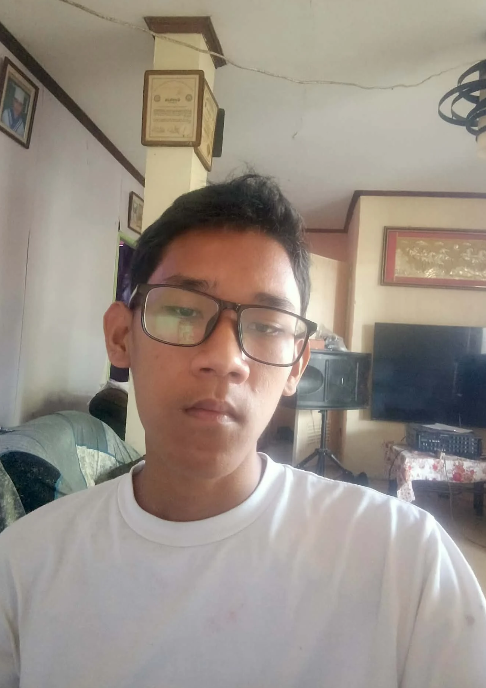

PROJECT DETAILS
Personal Portfolio

About the Project
This personal portfolio website introduces me, Ruben Tagaro, as a Computer Engineering student. It presents my educational background, skills, projects, and contact information in one place.
Project Objectives
- Introduce myself and my background.
- Showcase my technical skills and projects.
- Provide a way for visitors to contact me.
- Create a responsive and user-friendly website.
Technologies Used
Key Features
- Responsive layout for desktop and mobile.
- Profile picture and personal introduction.
- Education, skills, and project sections.
- Navigation menu and contact form interface.